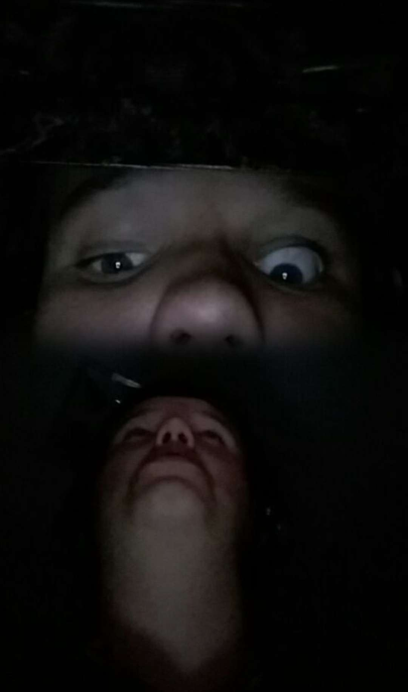

SCP NUMBER ONE. Class: 1
This image depicts lucas-34a and lucas-34b. lucas34a is constantly in fear and paranoia. He will often be seen quivering or hiding in dark places. Noted-Lucas-Event NLE-23 occurred July 2nd, March 5th at 2:36am. The Lucas was observed to have looked up at a right angle, and appeared very distressed. His gaze remained upwards as he screamed, wailed and cried. This state known as lucas-34a's "Aggravated State" was observed on separate events; NLE-54, NLE-55, NLE-78 and NLE-67 and inconsistent times.
These events intrigued researcher/personnel member Jimmy Mitchel, who began experimentation on lucas-34a for Project-ABL. Using a combination of thermal camera's and other experimental patented technologies at the foundation such as [REDACTED] and [REDACTED], Another being or force appears to appear 20 - 30cm above Lucas-34a's head, during these Aggravated States. During NLE-67, Prof. Mitchel was able to test out an experimental device known as [DATA EXPUNGED] to take photograph's of the subject during the event. Observed only in one of such images now titled Evidence-Piece-93, another entity, lucas-34b was observed at the spot of the previously unknown force. This has lead us to believe that lucas-34a's distress is focused at lucas-34b. We are not yet certain on how lucas-34a can see lucas-34b, but further research is looking into the being's vision to potentially use it for observing other anomalies. The image is the only clearly visible rendition of lucas-34b.
Lucas-34b appears lifeless with droopy, unmoving eyes. It does not appear to react to stimuli, and researchers have not yet gotten close enough to the subject during an Aggravated event to observe it with more accuracy. Whether lucas-34b is sentient or even alive is still up for debate.
This image depicts the last moment before Lucas-34a realizes that Lucas-34b in above him, shortly after this image was taken, he started screaming and frantically running around the room, yelling [DATA EXPUNGED].
Prof. Mitchel: Hello, I am here to ask you some questions.
Lucas-34a starts mumbling incoherently and walking around the room.
Prof. Mitchel: Lucas, can you understand me?
Lucas-34a continues to mumble while constantly looking above himself
Prof. Mitchel: Lucas, please cooperate.
Lucas-34a began screaming while looking up and Lucas-34b, the interview was halted